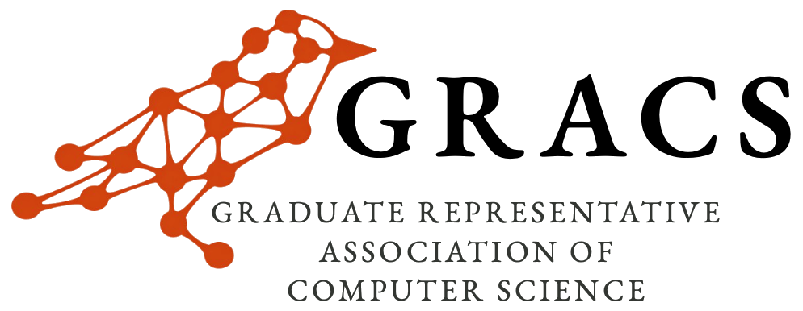
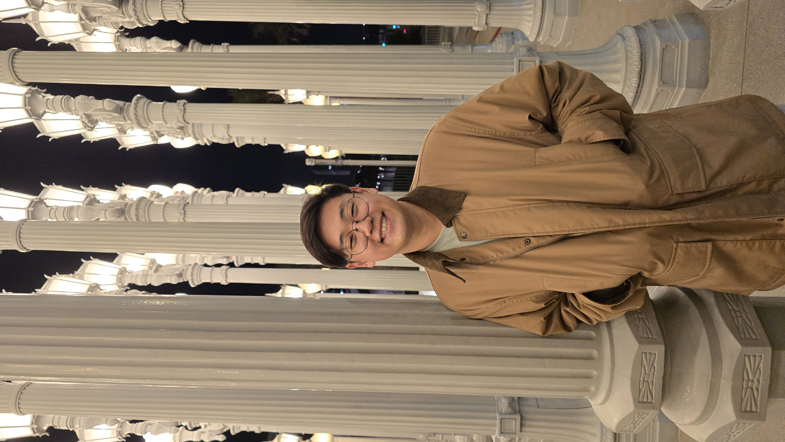

Virtual Recruiting Talk
Build the “Amazon for Government” with USUL
Featuring Michael Lee (Founding Engineer)
- When Friday, March 6, 2026 · 3:30–4:30 PM (America/Chicago)
- Where Virtual (Google Meet)
- Audience UT CS graduate students (MS/PhD)
Join USUL founding engineer Michael Lee for a focused recruiting session on how USUL builds software, how engineering teams contribute from day one, and what qualities stand out in successful Full Stack Software Engineer candidates.
Format: 30-40 minute talk + Q&A
This session is designed to help graduate students evaluate both role fit and team fit. Bring thoughtful questions about engineering scope, hiring expectations, and day-to-day collaboration. If you are exploring opportunities, keep your resume or LinkedIn profile ready for follow-up conversations.

Speaker Bio
Michael Lee
Founding Engineer, USUL
Michael is USUL’s founding engineer and will share how the team approaches product development, what problems they are solving, and how candidates can demonstrate readiness for full-stack roles in a high-ownership environment.
Recruiting
USUL is building the “Amazon for Government”—a platform that uses AI to help companies identify and pursue government contracts across national security technology, AI software, advanced manufacturing, and aerospace. The company serves Fortune 500 organizations and U.S. Government clients, has exceeded $5M ARR, and is expanding domestically with international growth planned.
Fullstack Engineer — San Francisco (On-Site)
You will develop data pipelines that enhance usability while collaborating directly with customers to design intuitive browsing and interpretation interfaces—balancing backend infrastructure with frontend user experience.
What USUL is looking for
- Experience with AI agent development and LLM utilization
- Proficiency with React and Next.js for building UIs
- Customer-facing presentation and communication skills
- Mission-focused problem-solving around national security
- Quick learning and iterative development practices
FAQ
Who can attend?
UTCS graduate students (MS/PhD).
Do I need to RSVP?
No RSVP required.
Will it be recorded?
No.
Where do I join?
Join on Google Meet: https://meet.google.com/ngq-umyy-eam
Where is the job posting?
Apply here: USUL Full Stack Software Engineer posting.
Contact
Email: utgracs@gmail.com